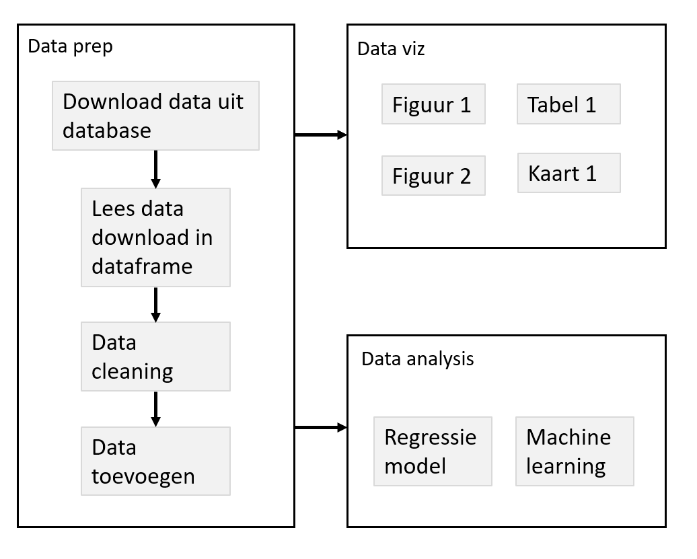

- Gebruik van functies voor een betere workflow
- Motivatie
- Wrapper functies voor plots
- Caching / drake
- Functies: extra tips & tricks
- Error handling
- S3
28 Mei 2020
R & Rstudio Advanced
“Dag” 2 - Deel 3
Project workflow
Een goed project:
- kan snel begrepen worden door anderen
- kan makkelijk aangepast worden (config)
- kan makkelijk uitgebreid worden
- delen van het project kunnen hergebruikt worden (modulair)
Functies zijn hier nuttig:
- Begrijpen van complexe code
- Duidelijk maken van inputs (argumenten) en outputs (
return()) - Functies helpen om complexe projecten modulair te maken
Logische folder structuur
Er zijn veel mogelijkheden om de verschillende bestanden in een project te verdelen in een logische folder structuur.
Dit is belangrijk:
- Houd code, data, en output altijd gescheiden
Een minimaal voorbeeld:

Er is hier 1 hoofd script, “analysis.R”, waarin alle analyses worden uitgevoerd. Verder is alles ondergebracht in sub-folders.
Project structuur
Organiseer de verschillende stappen, sub-stappen (sub-sub-stappen) voor een project.
